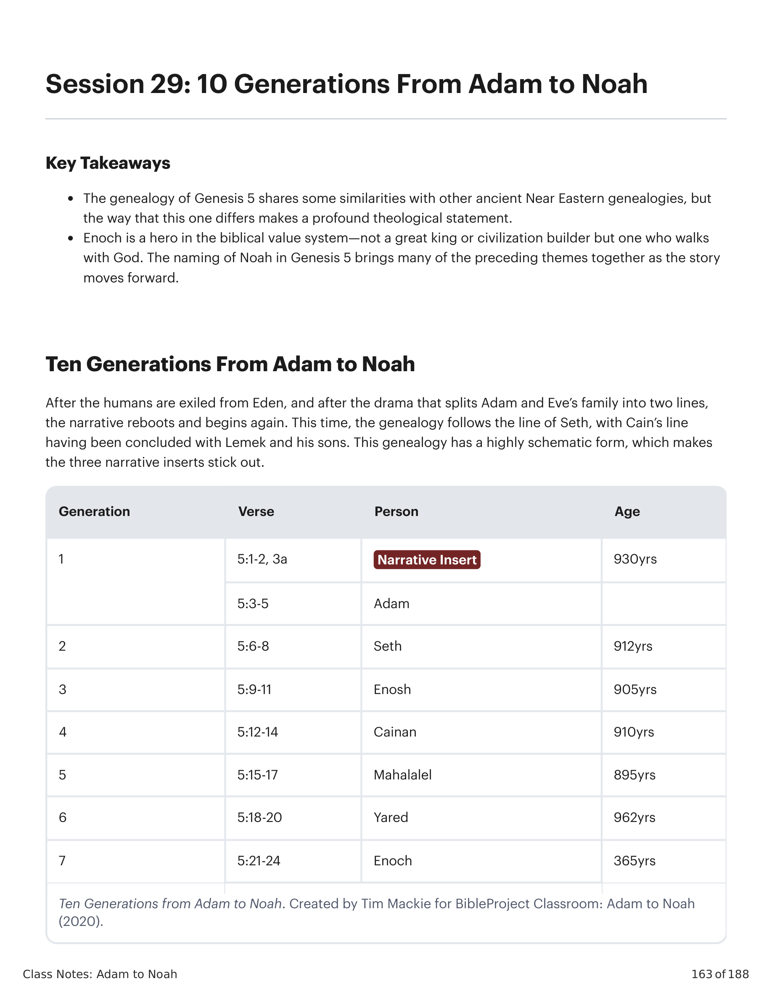
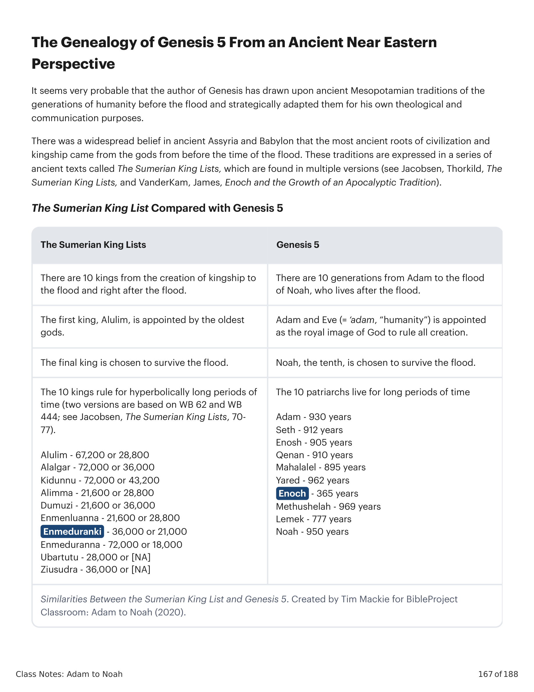

Após os humanos serem exilados do Éden, e após o drama que divide a família de Adão e Eva em duas linhagens, a narrativa reinicia e começa de novo. Desta vez, a genealogia segue a linhagem de Sete, com a linhagem de Caim tendo sido concluída com Leméque e seus filhos. Esta genealogia tem uma forma altamente esquemática, o que faz com que os três insertos narrativos se destaquem. Gênesis 5:1-32 lista 10 gerações de Adão a Noé, cada uma dada em uma forma literária idêntica: "e __ viveu __ anos, e gerou [nome do filho]. e __ viveu __ anos depois que gerou [nome do filho], e gerou filhos e filhas, e todos os dias de __ foram __ anos, e ele morreu." Há três figuras cuja entrada genealógica desvia desta forma, e precisamente nestes três pontos encontramos insertos narrativos que destacam temas significativos em Gênesis. Preste especial atenção a Adão, Enoque, e Leméque/Noé.After the humans are exiled from Eden, and after the drama that splits Adam and Eve's family into two lines, the narrative reboots and begins again. This time, the genealogy follows the line of Seth, with Cain's line having been concluded with Lemek and his sons. This genealogy has a highly schematic form, which makes the three narrative inserts stick out. Genesis 5:1-32 lists 10 generations from Adam to Noah, each one given in an identical literary form: "and __ lived __ years, and he caused the birth of [son's name]. and __ lived __ years after he caused the birth of [son's name], and he caused the birth of sons and daughters, and all the days of __ were __ years, and he died." There are three figures whose genealogical entry deviates from this form, and at precisely these three points, we find narrative inserts that highlight significant themes in Genesis. Pay special attention to Adam, Enoch, and Lemech/Noah.

Parece muito provável que o autor de Gênesis tenha se apropriado de tradições mesopotâmias das gerações da humanidade antes do dilúvio e as adaptado estrategicamente para seus próprios propósitos teológicos e de comunicação. Havia uma crença difundida na Assíria e Babilônia antigas de que as raízes mais antigas da civilização e da realeza vieram dos deuses desde antes do tempo do dilúvio. Estas tradições são expressas em uma série de textos antigos chamados Listas dos Reis Sumeros, que são encontradas em múltiplas versões. A Lista dos Reis Sumeros Comparada com Gênesis 5: Há 10 reis da criação da realeza ao dilúvio e logo após o dilúvio / Há 10 gerações de Adão ao dilúvio de Noé, que vive após o dilúvio. O primeiro rei, Alulim, é designado pelos deuses mais antigos / Adão e Eva (= 'adam, "humanidade") é designado como a imagem real de Deus para governar toda a criação. O rei final é escolhido para sobreviver ao dilúvio / Noé, o décimo, é escolhido para sobreviver ao dilúvio. Os 10 reis governam por períodos hiperbolicamente longos / Os 10 patriarcas vivem por longos períodos de tempo (Adão 930, Sete 912, Enos 905, Quenã 910, Maalalel 895, Jarede 962, Enoque 365, Metuselá 969, Leméque 777, Noé 950). O sétimo rei, Enmeduranki, é elevado à assembleia divina e tem um papel único entre os deuses / O sétimo patriarca, Enoque, não morre mas é transferido ao reino de Deus por sua relação especial com Deus.It seems very probable that the author of Genesis has drawn upon ancient Mesopotamian traditions of the generations of humanity before the flood and strategically adapted them for his own theological and communication purposes. There was a widespread belief in ancient Assyria and Babylon that the most ancient roots of civilization and kingship came from the gods from before the time of the flood. These traditions are expressed in a series of ancient texts called The Sumerian King Lists, which are found in multiple versions. The Sumerian King List Compared with Genesis 5: There are 10 kings from the creation of kingship to the flood and right after the flood / There are 10 generations from Adam to the flood of Noah, who lives after the flood. The first king, Alulim, is appointed by the oldest gods / Adam and Eve (= 'adam, "humanity") is appointed as the royal image of God to rule all creation. The final king is chosen to survive the flood / Noah, the tenth, is chosen to survive the flood. The 10 kings rule for hyperbolically long periods of time / The 10 patriarchs live for long periods of time (Adam 930, Seth 912, Enosh 905, Qenan 910, Mahalalel 895, Yared 962, Enoch 365, Methushelah 969, Lemek 777, Noah 950). The seventh king, Enmeduranki, is brought up into the divine assembly and has a unique role among the gods / The seventh patriarch, Enoch, does not die but is translated to God's realm because of his special relationship with God.
